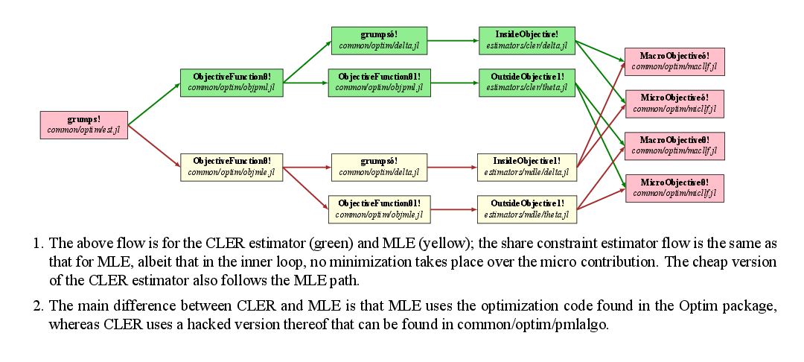

Algorithm flow

When Grumps is called using the grumps! call, it runs the grumps! method in est.jl in the optim folder. This sets up various objects and then calls an optimizer with an objective function that is estimator-specific. In other words, it will call a different method depending on the e argument in ObjectiveFunctionθ! in est.jl in the optim folder.
These methods ObjectiveFunctionθ! are defined either in one of the Julia files in the optim folder whose name starts with obj, or in a specific estimator folder; see estimators folder. ObjectiveFunctionθ! then decides which internal optimizer (i.e. one that finds $\delta$) to call: they're all called grumpsδ!.
After optimization is completed, Grumps will call a standard error computation routine and then return.